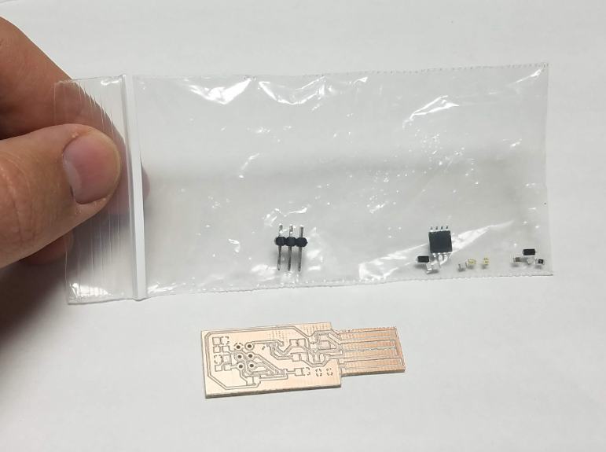
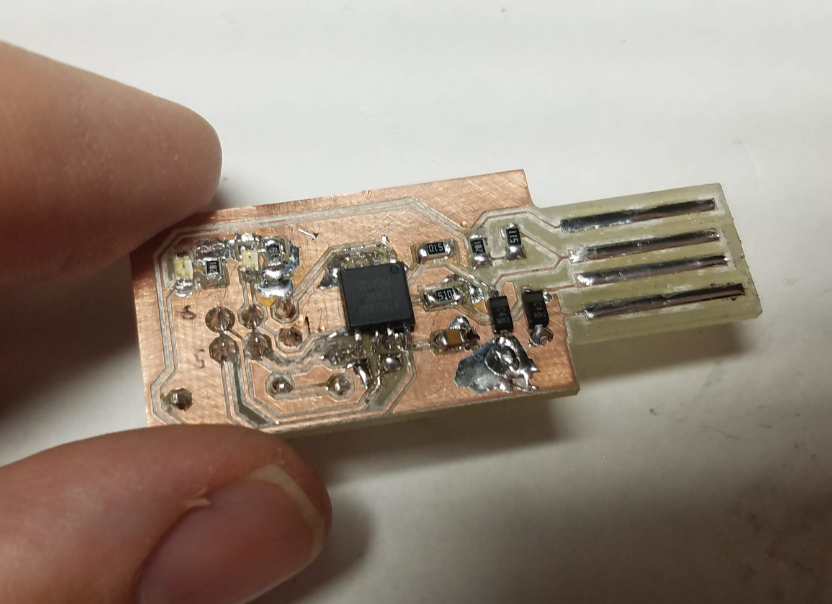
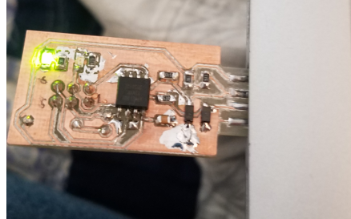

back home
Week 3: Soldering!
Let's build the in-circuit programmer!
Step 1: Open Kit
Jennifer is the best! I'm so grateful that she made these kits for us.
Fig. 1 Kit

Step 2: Solder
Soldering this board was very tough. I had three major challenges as listed below.
Soldering Challenges
Invisible shorts (I cut these out with an Exacto knife and probed with a multimeter)
Pulling up traces (be careful!)
Shorting with solder blobs (I used a lot of solder braid, not pretty)
Fig. 2 Soldered board

Step 3: Test
I tested the board by adding more and more solder to the edge traces and by putting it in my usb port.
Fig. 3 USB test of board

Notes:
Get help from Jennifer